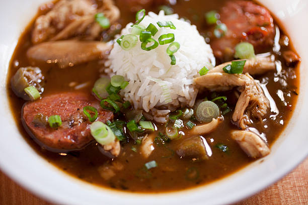

Jonathan's Gumbo

Description
This is a gumbo that I've developed over the years, it's super simple, quick to make and ideal for feeding a diverse set of guests as it works on the basis of establishing a gravy and adding "toppings"
Toppings can be the standard chicken and sausage, to non-standard - such as aubergine or mushroom if you're serving to vegans or vegetarians.
I like to operate on a "hot and quick" basis to creating the roux, and use Geesowska Kielbasa to substitute for Andouille - give it a go!
Ingredients
Makes approximately 6-8 portions
- 100g vegetable oil
- 120g plain flour
- 2 onions
- 6 small bell peppers
- 4 sticks of celery
- 1 tbsp minced garlic
- 2 small carrots
- 1 tsp cayenne pepper
- 2 tbsp Cajun seasoning (spicy)
- 2 tsp Crystal hot sauce (or your favourite vinegar based hot sauce)
- deglazing liquid - such as whisky or beer
- 1 litre veg/chicken stock
- Toppings - such as chicken, andouille, smoky mushrooms
Steps
- Rough dice pepper, onion and celery, finely mince garlic and carrot
- Add oil to pan, get nice and hot, add flour and immediately begin whisking. Keep it on a medium-high heat and whisk continuously. Keep going to chocolatey colour and a nice nutty aroma - about 10 mins if hot enough
- Add onion, pepper and celery (trinity) and carrot to pan and sautee until tender-ish, Add garlic, cayenne and cajun seasoning to bloom spices
- Deglaze, add stock (slowly while mixing) and finally add “toppings”
- Simmer for at least an hour but ideally two to get rid of the raw flour taste and develop flavour
- Serve with white rice and garnish with thinly sliced spring onion